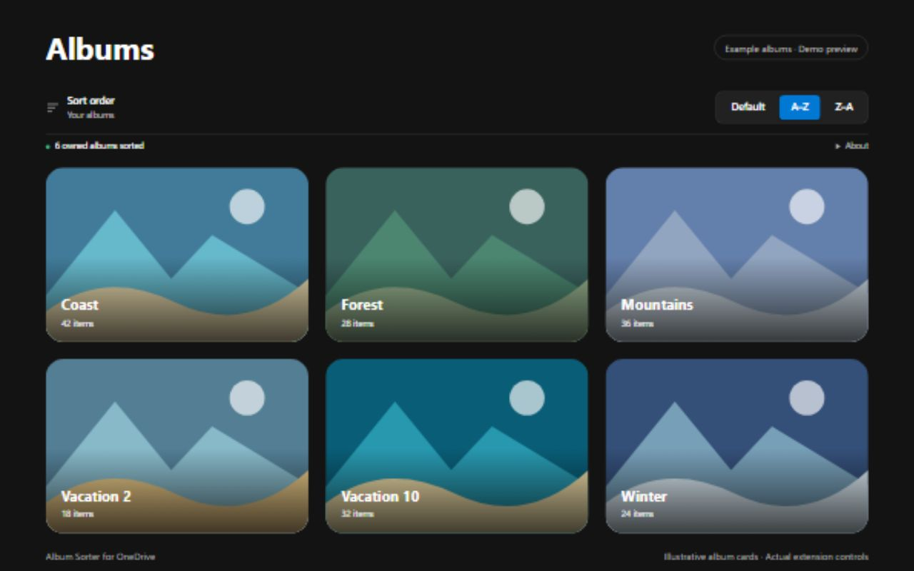

Natürliche alphabetische Reihenfolge
Zahlen werden natürlich verglichen: Vacation 2 steht vor Vacation 10. Alben mit gleichen Namen bleiben getrennt erhalten.
Chrome-Erweiterung · Bald verfügbar
Finde das gesuchte Album schneller. Ergänze deine eigenen Alben in OneDrive Personal um eine natürliche Sortierung von A–Z und Z–A.
Die erste Veröffentlichung im Chrome Web Store wird vorbereitet. Eine Installation über diese Seite ist noch nicht möglich.

Am gewohnten Ort
Öffne Fotos → Alben in OneDrive Personal und wähle A–Z oder Z–A in der Sortierleiste. Deine Auswahl wird gespeichert und die Seite neu geladen. Mit „Default“ kehrst du zur ursprünglichen OneDrive-Reihenfolge zurück.

Zahlen werden natürlich verglichen: Vacation 2 steht vor Vacation 10. Alben mit gleichen Namen bleiben getrennt erhalten.
Die Erweiterung liest vor dem Sortieren auch Folgeseiten der Albumliste ein. Sie ordnet nicht nur die gerade sichtbaren Kacheln um.
Deine Sortierauswahl bleibt im aktuellen Chrome-Profil gespeichert. Sie wird nicht mit anderen Geräten synchronisiert.
Nur was die Sortierung benötigt
Im Browser verarbeitetAlbumdaten werden vorübergehend verarbeitet, um die Ansicht zu sortieren. Der Entwickler erhält diese Daten nicht.
Keine Änderungen an deinen AlbenFotos und serverseitige Albumdaten bleiben unverändert.
Eine gespeicherte EinstellungDie Erweiterung speichert ausschließlich die gewählte Reihenfolge. Keine Werbung, Nutzungsanalyse oder Lizenzprüfung.
Vollständige Datenschutzerklärung →Deine eigenen Alben in OneDrive Personal auf onedrive.live.com. Geteilte Alben und OneDrive for Business werden nicht unterstützt. Die Bedienoberfläche der Erweiterung ist Englisch.
Ja. Beim Wechsel der Reihenfolge wird die Seite neu geladen und die aktuelle Auswahl aufgehoben, wie bei einem normalen Neuladen. Nach Navigation innerhalb von OneDrive kann ebenfalls ein manuelles Neuladen nötig sein.
Die Erweiterung verwendet den in OneDrive Web beobachteten Albumabruf. Änderungen an dieser Schnittstelle können die Kompatibilität beeinträchtigen. Wird beim Einlesen der Alben ein Fehler erkannt, erhält OneDrive die ursprüngliche Antwort.
Das Einlesen aller Seiten der Albumliste benötigt Zeit und Speicher. Zusätzliche Abrufe werden nach 60 Sekunden beendet. Gleichzeitige Änderungen an Alben können die währenddessen eingelesene Sammlung beeinflussen.
Bringe natürliche alphabetische Ordnung in deine eigenen OneDrive-Alben.
Bald im Chrome Web Store verfügbar.
Fragen oder Kompatibilitätsprobleme?
Sobald die Erweiterung veröffentlicht ist, kannst du im Supportbereich ihres Chrome-Web-Store-Eintrags Fragen stellen, Fehler melden und Funktionen vorschlagen. Gib deine Chrome-Version, die Erweiterungsversion und eine Beschreibung des Problems an.
Supportbeiträge können öffentlich sein. Veröffentliche keine Passwörter, Sitzungstokens, privaten Albumexporte oder persönlichen Fotos. Nutze für vertrauliche Anfragen stattdessen die Entwickler-Kontaktdaten im Store.
Freiwillige Unterstützung
Album Sorter for OneDrive ist kostenlos. Du kannst die Wartung und künftige OneDrive-Kompatibilität mit einem freiwilligen Beitrag unterstützen. Spenden schalten keine Funktionen frei.